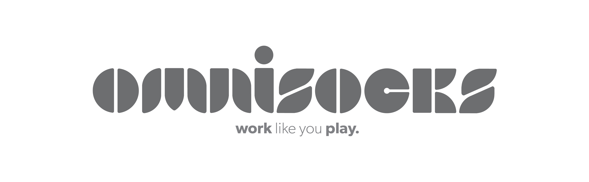
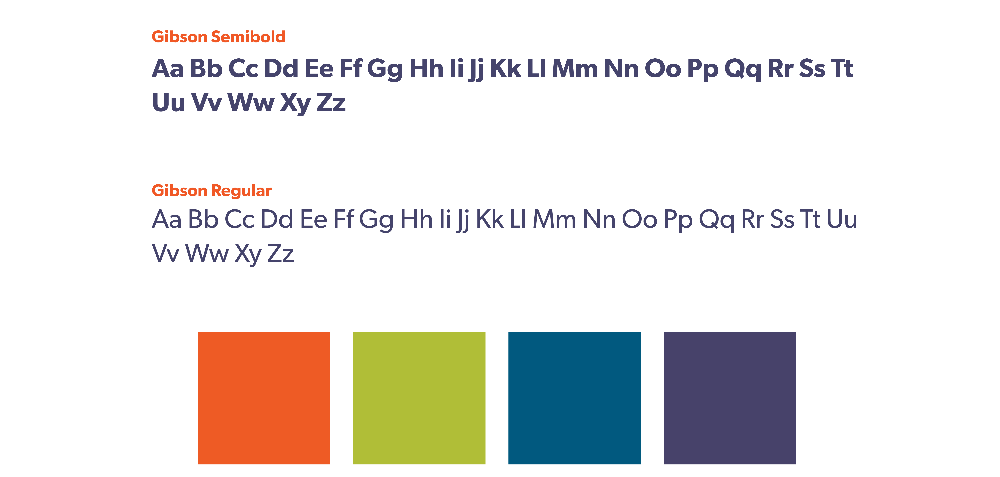
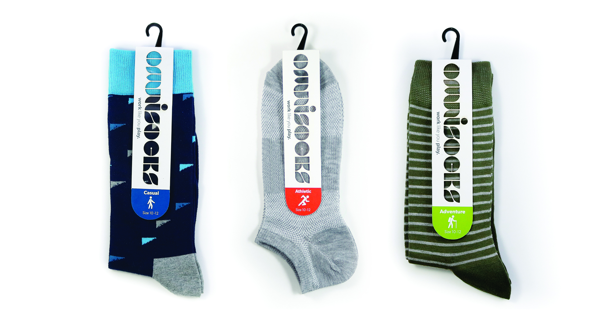

OmniSocks is an all inclusive, no B.S. sock brand that offers stylish, premium quality socks for a fair price. As the younger generations favor experiences over tangible items, it is important to create an experience in the product and a connection to our customers' daily lives.
In latin, the word “Omni” translates to “all being”. The overall goal of OmniSocks is to create an all inclusive brand that expresses who our customers are. Through research I found that women often opt to buy men’s sock because they come in more styles and options. To cater to these needs I decided that the socks don’t need to have a gender which is one of the main selling points of the sock.

In designing a logo I wanted to design something that was modern, friendly and unique. Since one of the goals of the brand is to show off your unique personality, I found it would be important to create a mark that is only recognizable as OmniSocks. The tagline, “work like you play”, is used because as our target audience is 20-35 year old working adults. It sends a message that there are socks for everyone and every occasion continuing the inclusiveness of the brand.
From the beginning I wanted to be very playful with the colors and typography to make the brand relaxed. I only used two fonts in the brand to make it as simple as possible. I found the font Gibson was perfect as it was simple, modern and friendly like the brand. For heavy weighted text I used Gibson Semibold and for lighter and bodycopy text I used Gibson Regular.

The final packages reflect the brand's simplicity well through not only the typography and color, but the forms themselves. I decided to make the packages white with a splash of color to let the socks be the main focus. Each package has a die cut of the logo on the front as another way of making sure the socks are the focal point.

Since our target audience is so young, an engaging web presence is key. Since the brand has so much to do with people’s lifestyles, I used a lot of lifestyle imagery that is trending right now. On the website specifically, I continued the simplicity of the brand with a lot of white space and a simple interface. On the home page you are greeted by a large banner image with text overlaid that is friendly and relaxed.